Exercises Day 1¶
Table of Contents
1. Using a multimeter¶
1A. Make sure the multimeter has batteries installed. Put the red lead in the port marked ‘VmAuA’ and the black one in the port marked COM.
1B. Set the multimeter to ‘Ω’. Use your multimeter to measure the resistance of any 3 different resistors in the kit. Check whether the resistance values you read correspond to the bands on the resistors. How is your multimeter measuring this resistance?
1C. Now set your multimeter to measure the voltage across a battery. What does it mean if you record a negative voltage?
Solderless Breadboard¶
To build circuits during the course, we are going to use a solderless breadboard. If you need to, refer back to the reading material for the overview on how to use a breadboard, it also includes some basic troubleshooting which may prove useful if you run into problems.
The most important thing is to remember which holes are connected. Your long breadboard is actually made up of two separate breadboards; + and – rails run through rows 0-30 and 31-60. If you want to use the entire length of the breadboard, you will have to connect these rails together with wires.
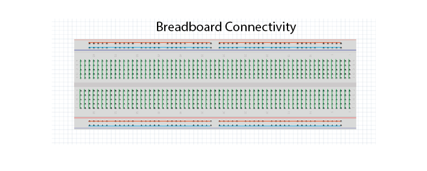Teensy Microcontroller¶
In your kit you will find a Teensy 3.2. This is a microcontroller (a small computer) that can generate output voltages or collect input voltage signals.
We can control the Teensy through software. In terms of hardware, we interact with the Teensy through its ‘pins’ or ‘vias’. Different vias have different functions.
The kit includes a Teensy pinout card. This diagram (‘pinout’) shows us what each pin of the Teensy can do. Each gold circle (‘via’) on this pinout represents an input or output of the Teensy.

Your teensy already has header pins attached, so that you can click it into your breadboard.
It’s important to distinguish between:
Ground pins (GND)
Analog pins, that can read varying voltages, such as a wave. There is also an analog ground.
Digital pins, that can read or write HIGH or LOW values.
We’re going to attach the Teensy to our solderless breadboard. Removing and replacing the teensy can sometimes bend the pins, so we’re going to leave it here for the whole course.
Warning
If you have to remove the teensy from the board, never hold it by the USB port, as it can easily snap off!
1D. Attach the teensy to the left of your breadboard as shown above. If you make sure the breadboard is in the same orientation as this schematic, it will make the following exercises easier to follow.
1E. Use the USB to micro-USB cable in your kit to connect the Teensy to your computer. The Teensy comes with a default programme already loaded onto the board, so you should see the LED on the board start to blink slowly as soon as it is powered on.
1F. We can see that digital pin 13 has (LED) written beside it. Attach readout wires to the breadboard, and use your multimeter to find the voltage across the LED.
2. Using an oscilloscope¶
Oscilloscopes let us measure time-varying voltages with much higher time resolution than the multimeter.
2A. Your Picoscope comes with two probes, you only need one. Connect it to the ‘A’ port on your oscilloscope.
2B. Set the slider on the probe itself to ‘1x’. Connect your PicoScope to your computer and open up the Picoscope software.
2C. Use the PicoScope to measure the blink signal at the readout wires, as you did with your multimeter. Make sure you play around to find nice X and Y scaling. What shape & amplitude does the signal have?
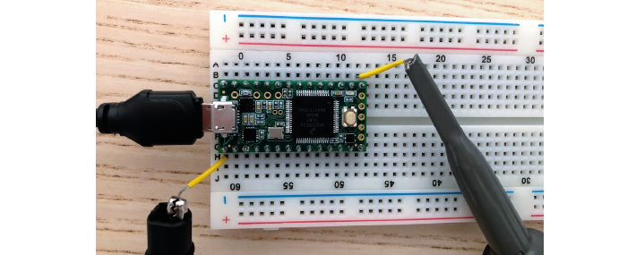If you see something odd, check:
x-axis scaling (ms/div)
y-axis scaling (Auto doesn’t always work)
whether it is set to DC (direct current) or AC (alternating current).
We’ll now use the Teensy microcontroller to output a sine wave, instead of the blink example.
2D. Open the Arduino Software Upload the following code to your teensy:
Make sure that under ‘Tools/ Board’ your Teensy 3.2 has been found, and check which USB (COM) port it’s in (‘Tools/Port:). If you see ‘Done Uploading’, the Teensy will start giving a sine wave as output from one of the analog output pins.
2E. Measure the output with your multimeter, from pin A14.
2F. Connect your oscilloscope probe to A14 and visualise the signal in your PicoScope software.
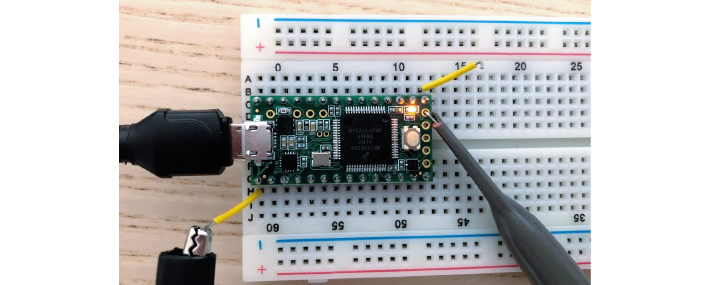3. Ohm’s Law¶
During this course, we’ll be using a circuit simulator to build our circuits online. This allows us to quickly test our ideas and understanding, and make predictions about what will happen when we build the circuit in real life. Ohm’s law describes how potential (V), current (I) and resistance (R) are related:
When looking at a whole circuit, we can use this to calculate how much current will flow. Here is a simple circuit with a battery and two resistors. Current flows from the positive terminal of the battery to ground, which is the negative terminal of the battery.
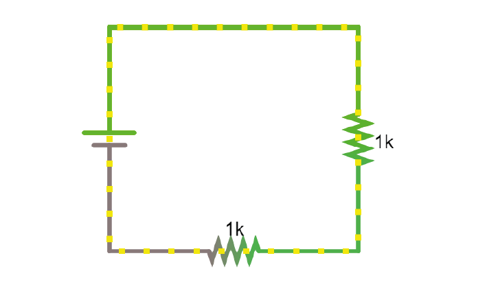3A. Click on the image to go to the simulator. Right-click on the top wire in the circuit, and then select Edit to display the current through that wire. Double-click on either of the resistors to decrease their value and see how the current in the circuit responds.
4. Resistors¶
Here’s another simulation demonstrating Ohm’s law. This time, the current moves from a 5 Volt voltage source (bright green) into ground (grey, earth), across one of two resistors.
4A. Display the voltage and current over both resistors in the ‘scope’ (right click/show in new scope). What will happen to the voltage over the left resistor if you double its resistance? What will happen to the current?
4B. What will happen to the voltage and current over the right-hand resistor? Double the value in the simulator and see if your predictions were correct.
5. Voltage Divider¶
In simulator¶
When we measure how much voltage is provided by a voltage source (such as a battery, or the output from the Teensy), we always measure it relative to a point that we consider 0V. In a circuit powered by a battery, we consider the negative terminal to be at 0V. If there is a connection to earth, or ground, this is taken as 0V.
Voltage (potential energy) ‘drops’ over each resistor, as potential energy is converted to another form of energy (such as heat or light). In a circuit powered by a 9V battery, all 9V of potential energy from our battery source must drop over circuit components, so that we end up back at 0V.
In each circuit below, the current through R1 and R2 must be same. Given the same current, the higher the value of the resistor, the higher the voltage drop over it (V=IR). The total voltage drop over the circuit must equal the provided voltage.
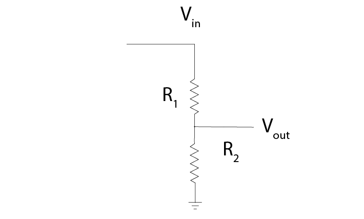That means that, in a circuit with multiple resistors in series, the ratio of their resistances determines how much voltage will drop over each. We can therefore split up (divide) the voltage from a source across resistors. If we measure the voltage in between these resistors as Vout:
5A. Using the simulator (here’s an empty full-screen https://tinyurl.com/y477e9qd) build a voltage divider circuit in which you use a 3V battery and two resistors to provide an 272 mV output voltage Vout.
On breadboard¶
We’ll now build the circuit you just designed in real life, using a solderless breadboard.
5B. Use the battery holder and two AA batteries to create a 3V source. Use any two resistors from your kit to build a voltage divider, as shown below. If your multimeter doesn’t fit in the breadboard holes, you can place a short piece of wire at each point you want to measure.
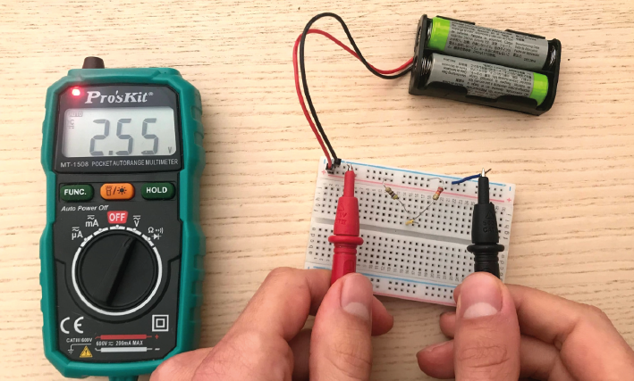 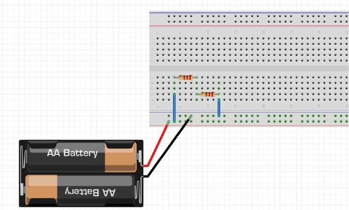Bonus exercise: Replace one of the resistors to make your output voltage as small as you can get it. What’s the smallest reading you can still pick up with your multimeter? How does this compare to the amplitude of a spike measured in the extracellular space?
6. Capacitors¶
Warning
Always check whether your capacitors are polarised or non-polarised. Polarised capacitors must be used in a specific orientation. Usually, ceramic (the yellow ones in your kit) capacitors are not polarised and you can use them in either direction, whereas tube-shaped electrolytic capacitors (the black and blue ones in your kit) are polarised. The negative pin is indicated by a ‘-’ marking, and the positive leg is often longer.
Capacitors, direct current¶
Capacitors are made of two conducting plates, separated by an insulating material that prevents the plates from touching. Charges cannot jump through the insulating layer. Instead, charges collect on one plate, forming an electric field that pushes away similar charges on the opposite plate. This movement of charge is what gives us current flow in the circuit, even though charges cannot flow directly through the capacitor.
The amount of charge (Q) a capacitor can separate depends on is its capacitance (C, measured in farads) and the voltage (V) across the capacitor.
In a direct current circuit, current will flow while the capacitor charges, as charge is pushed or pulled on either plate. Current flow will stop once the capacitor is fully charged. This electric charge can be discharged (and, for instance, used to power something) by providing a path that connects the positive and negative charges of the capacitor. In this simulation, you can charge and discharge a capacitor and see the current flow through the circuit.
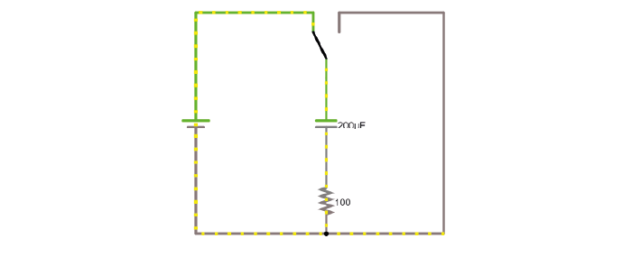6A. Modify the simulation to power an LED (Draw/Outputs and Labels/Add LED) by the capacitor as it discharges. The simulator will turn the LED red when it is on.
6B. Using the breadboard, build this circuit to charge and discharge one of the large capacitors in your kit.
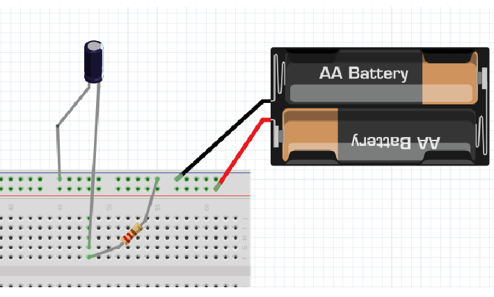 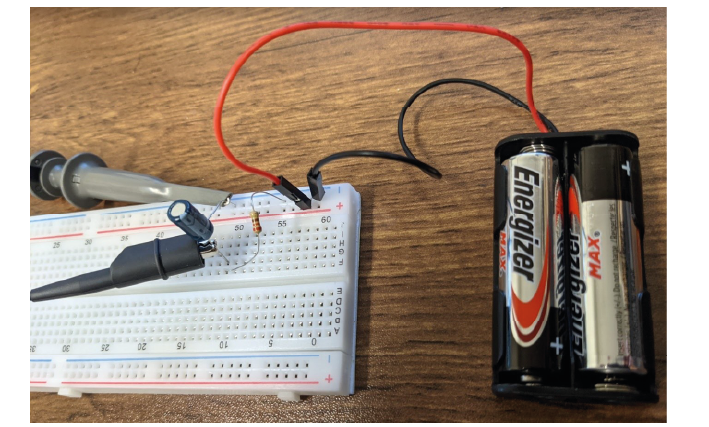6C. In this configuration, you will need to move the + leg of the cap (where the oscilloscope probe is) between GND and +3V. In the schematic, the + leg is connected to +3V, in the photo it is connected to GND. You should see it charge and discharge in your PicoScope trace. How long does it take for the capacitor to charge?
6D. Change the value of the resistor. What does this change in your trace? Can you explain why?
7. Alternating signal (AC)¶
So far, we have mostly used resistances and Ohm’s law to describe how the circuit resists direct current flow. This is applicable to direct current situations (such as batteries), but the action potentials and LFPs we measure from neurons can go in both directions- they are alternating currents. So, how do resistances and capacitors ‘resist’ alternate current flow? Alternating currents have different frequencies. Action potentials cause very fast changes in current (and potential), whereas synaptic inputs and their sums are much slower. We have to make sure the frequencies we are interested in can travel through our recording circuit. Here is a demo where an alternating signal increases and decreases in frequency. At the bottom of the page, you can see the wave visualised.
Note
When you have capacitors in the simulator, it is a good idea to click ‘reset’ whenever you make changes, as they will otherwise store charge and can create weird effects.
7A. Press ‘Play Audio’ to hear how the sound is modulated as the frequency increases.
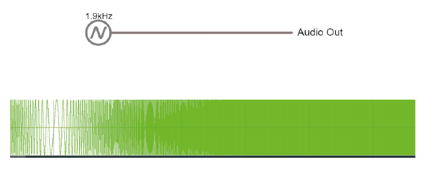When we were only dealing with resistors, changes in our circuit happened instantly. We have seen that introducing a capacitor into our circuit means that we have to take time into account, as it takes time for the capacitor to charge and discharge. Resistors are not sensitive to changes in frequency, but capacitors are.
8. Impedance¶
To describe restriction of direct current flow, we used resistance (R). To describe opposition to alternating current, we need to use the term Impedance (Z), which takes into account time-varying signals. See the theory handout for more information.
Here are two circuits, both provided by an alternating voltage source with a different frequency. In the scope below, the voltage trace of the source and the capacitor are plotted.
8A. Visualise the current in the circuit (for instance the current flowing through the stretch of wire). You could add a new scope to do this or double-click the wire and ‘show current’. Which circuit has higher current?
8B. Add a third circuit, powered by an alternating voltage source of 120 Hz. What happens to the current as the frequency increases?
(Bonus question: what happens to the voltage drop across the capacitor as frequency increases?)
The impedance magnitude of a capacitor, also called reactance (Xc), depends on:
Where f is the frequency with which the current alternates, and C is the capacitance. With increased frequency or capacitance, a capacitor will provide less restriction of current flow.
When you see a capacitor in a circuit, you know you need to think about the frequency of the signal. Steady direct current has no frequency, so Xc is infinite: capacitors only pass alternating signals.
9. Capacitive voltage divider¶
Because capacitors impede current flow, we can use them to build voltage dividers, just like the resistor divider shown above.
9A. Try changing the capacitance values C for the first capacitor. How does this change your output voltage?